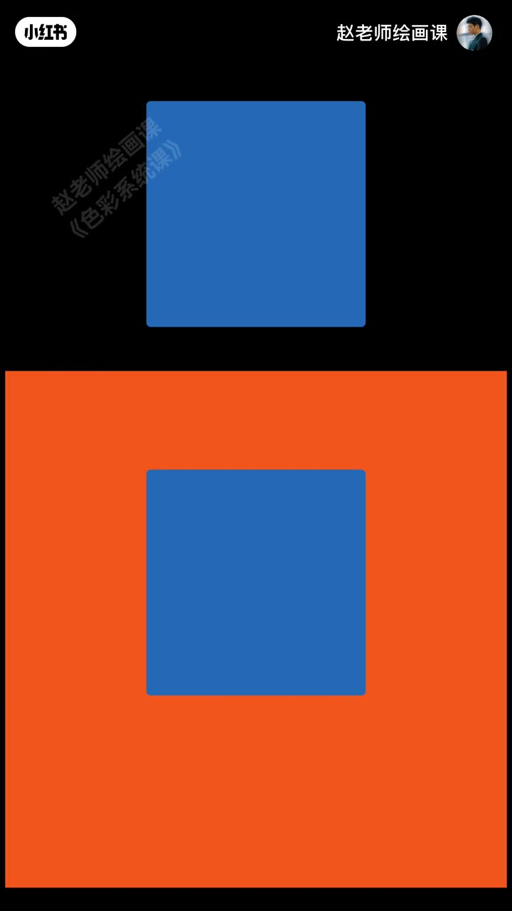
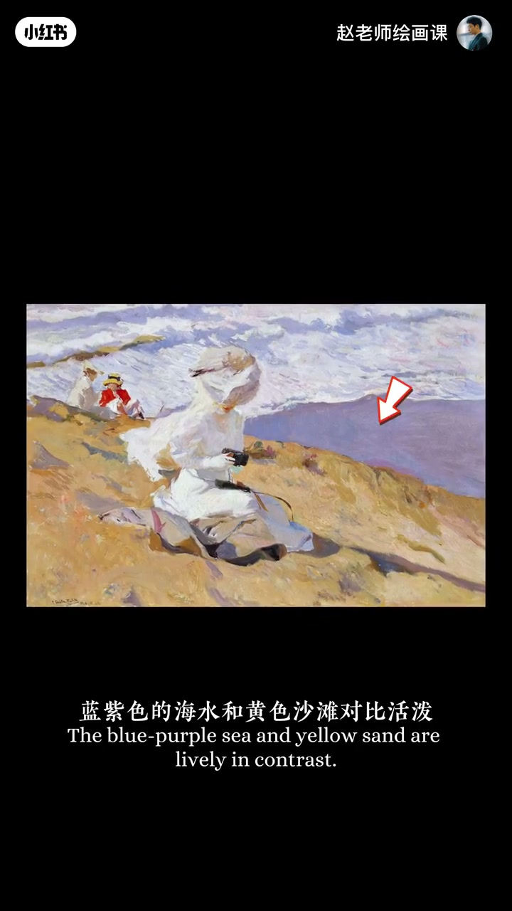
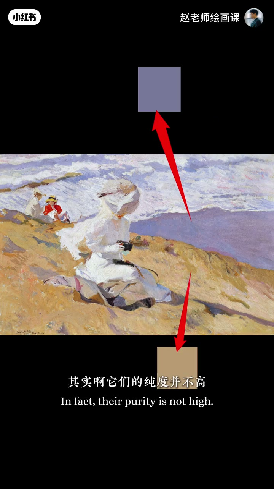
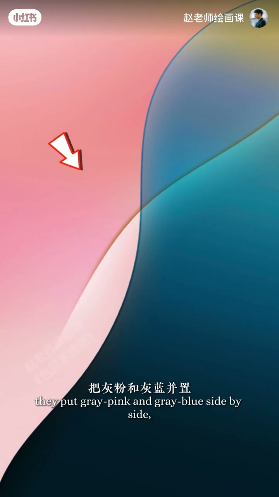
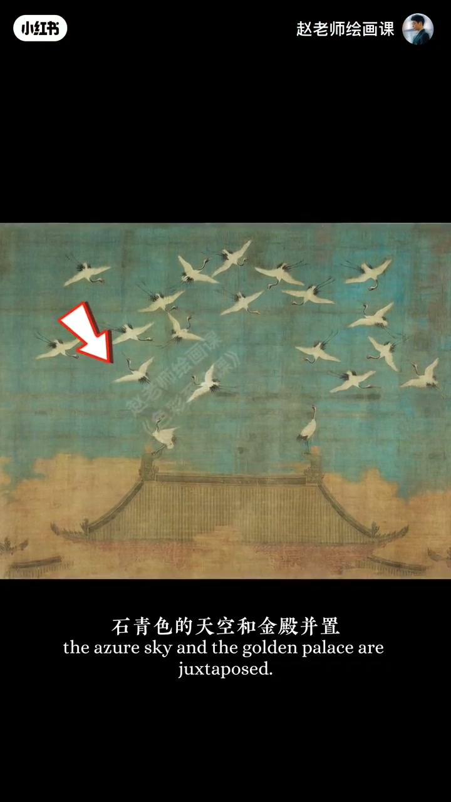

内容要点
同蓝换暖橙底会更显蓝——眼睛自带滤镜。索罗拉海边蓝紫海与黄沙活泼，取色却显示纯度并不高：强对比色并置时，眼睛会把彼此推向对方补色，脑补得更鲜艳，即同时对比。摄影可中纯对比色并置，最高饱和留给焦点；灰粉灰蓝加明度差同样耐看。宋徽宗《瑞鹤图》石青与金殿互推，白鹤微暖也靠蓝天。别一味堆纯度。
知识结构
换底更蓝；索罗拉纯度不高；互相推向补色＝同时对比。
中纯对比＋焦点高饱和；堆纯度适得其反；灰粉灰蓝。
石青与金殿互推；白鹤微暖；底层逻辑与课宣。
配色先设计关系：用中等纯度的对比并置激活眼睛滤镜，把最高饱和留给焦点，不要靠硬堆纯度。
00:00-00:50同时对比：眼睛自带饱和滤镜
蓝想更蓝可提纯度，但换个背景——同样更蓝。因为眼睛自带滤镜。索罗拉海边风景蓝紫海水与黄沙对比活泼，并非颜料硬堆：吸色可见纯度并不高。
两块对比强的颜色放一起，眼睛自动把彼此往对方补色方向推，脑补更鲜艳——色彩的同时对比原理。00:09／00:20／00:30 构成证据链。



00:50-01:31摄影与壁纸：中纯对比＋焦点强调
摄影处理人物背景：选两块中纯度对比色并置，画面舒服又活泼；再把最高饱和强调色留给视觉焦点，主次清晰。索罗拉同一思路。一味堆纯度制造对比，结果适得其反。
聪明的 iOS 壁纸设计把灰粉与灰蓝并置，再配较高明度差，既耐看又现代。01:22 灰粉灰蓝并置是直接示范。

01:31-02:17瑞鹤图：直觉用到极致
宋徽宗《瑞鹤图》里石青天空与金殿并置：石青让金殿更金，金殿让天空更蓝；白鹤微微散暖也得益于蓝天对比，仙鹤灵气十足。千年前画师不懂现代色彩术语，却用直觉把同时对比用到极致。
收束称此为色彩底层逻辑与视觉语法；片尾预告色彩调和课。01:35 《瑞鹤图》全景可指认。

完整转录（68段）
以下文本由 Whisper medium 模型自动转录，可能存在少量识别误差，已尽可能修正。
这是一块蓝色
如果想让它更蓝一点
直接提高纯度就可以
那
换个背景呢
是不是也变得更蓝了
这是为什么
因为啊
人的眼睛自带滤镜
比如
索罗拉的这幅海边风景
蓝紫色的海水
和黄色沙滩对比活泼
这完全是靠颜料硬堆出来的吗
当然不是
我们来吸一下颜色
其实啊
它们的纯度并不高
这完全是因为我们的眼睛
也加了饱和滤镜
也就是当两块对比比较强的颜色
放在一起的时候
眼睛会自动把彼此
往对方的补色的方向去推
就是脑补的更鲜艳
这叫做色彩的同时对比原理
在摄影中处理人物背景色彩时
可以选两块中纯度的对比色并制
画面就会变得舒服又活泼
然后啊
再把最高饱和的强调色
留给视觉焦点
你就能得到一个既和谐活泼
又主字清晰的完美搭配
你看索罗拉
就是完全一样的思路
所以
如果你想一味的靠堆纯度来制造对比
那结果一定是适得其反
聪明的LOS壁纸设计师们
把灰粉和灰蓝并制
再配上较高的明度差
就得到了一个既耐看
又时尚现代的经典配色
在宋徽宗的锐鹤图里
石青色天空和金电并制
石青让金电更金
金电让天空更蓝
白鹤微微散暖
也是得益于蓝天的对比
这一抹暖意啊
让仙鹤灵气十足
千年前的画师不懂色彩
却用直觉把同时对比用到了极致
也画出了一位帝王
最后的祥瑞幻梦
这就叫色彩的
底层逻辑
这是一种强大的
视觉语法思维
如果你想把这种底层思维
转化成自己的色彩能力
欢迎来我的色彩系统课
下期我们来讲
让任何颜色都可以统一和谐的技巧
色彩调和
我们下期见
拜拜